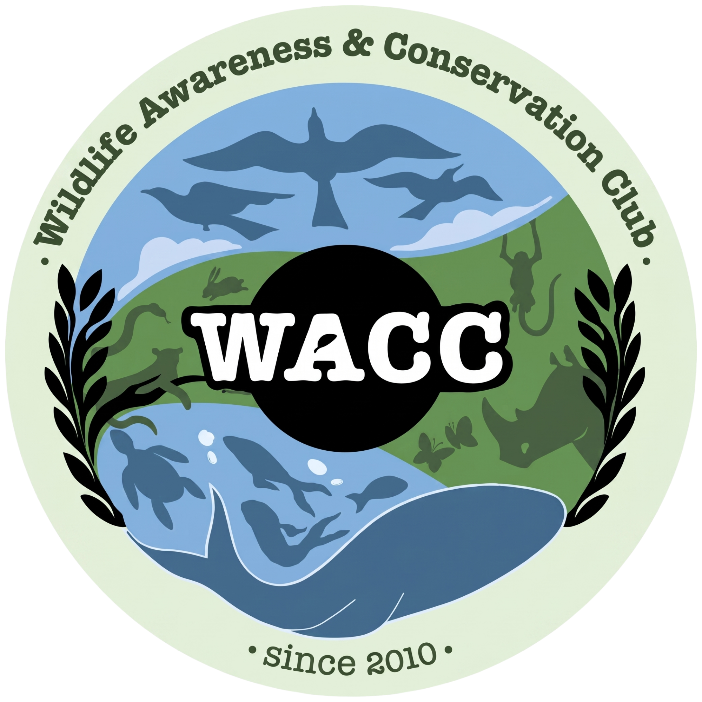
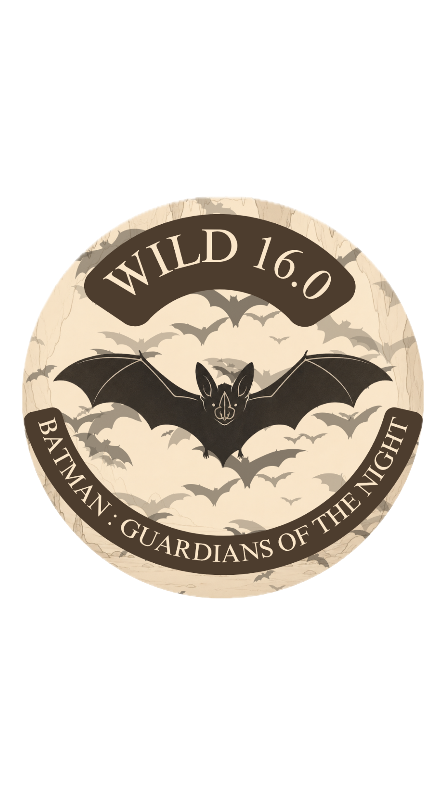

Endemic
Found only in Karnataka, India.

WACC | WILD 16.0 Register Now ➹20 - 30 September 2026 · SJU
A week of wild ideas, bright minds and the overlooked creatures that keep our forests alive.

The Wildlife Awareness & Conservation Club (WACC) is a student-led initiative at St. Joseph’s University, Bengaluru, dedicated to creating awareness and encouraging action for wildlife and the environment.
Through events, campaigns, workshops, outings and conservation initiatives, WACC brings students closer to nature and helps turn environmental awareness into meaningful action.
From celebrating biodiversity to addressing the challenges faced by wildlife and their habitats, WACC creates a space where curiosity, creativity and conservation come together.
Follow WACC on Instagram ➹WILD 16.0 returns with the theme “Batman: Guardians of the Night”, celebrating the forests and the creatures that quietly hold them together.
Our Mascot is BATthew, a Kolar leaf-nosed bat - a rare and critically endangered species found only in Karnataka. This small natural pest controller is part of a much bigger story: biodiversity deserves our attention, even when it lives in the shadows.
Found only in Karnataka, India.
Its habitat and roosting sites need protection.
A quiet keeper of ecological balance.
20 - 30 September
St. Joseph’s University, Bengaluru
Bannerghatta National Park · 8:00 AM - 5:00 PM
Arrupe Atrium · 12:50 PM - 1:15 PM
Denobili Hall · 12:50 PM - 1:30 PM
Arrupe AV Room · 12:50 PM - 1:30 PM
Nine events to make your mark, from a cave-bound treasure hunt to a frame-by-frame conservation story.
Treasure Hunt
Sustainability Startup Pitch
Debate
Painting
Policy & Conservation Challenge
Escape Room
Environmental Quiz
Cosplay
Reel Making
Select the registration form that applies to you.
Please carry a valid college or university ID and arrive 15 minutes before your event.